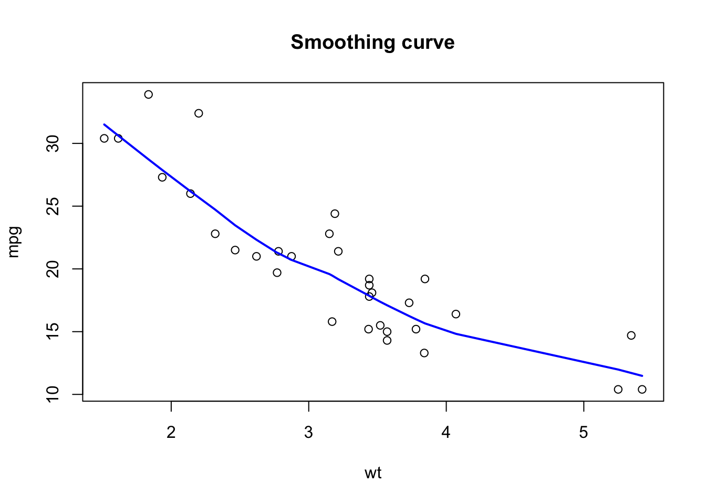
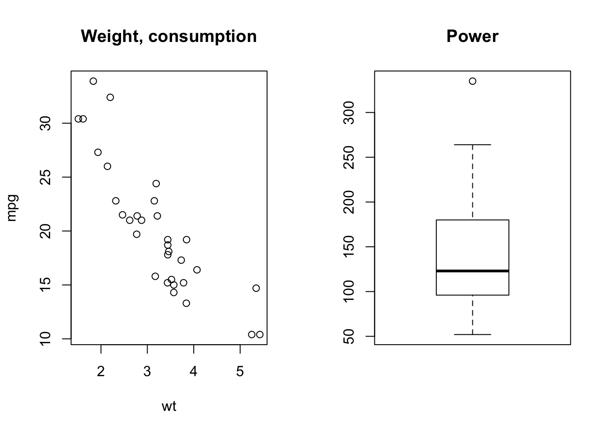
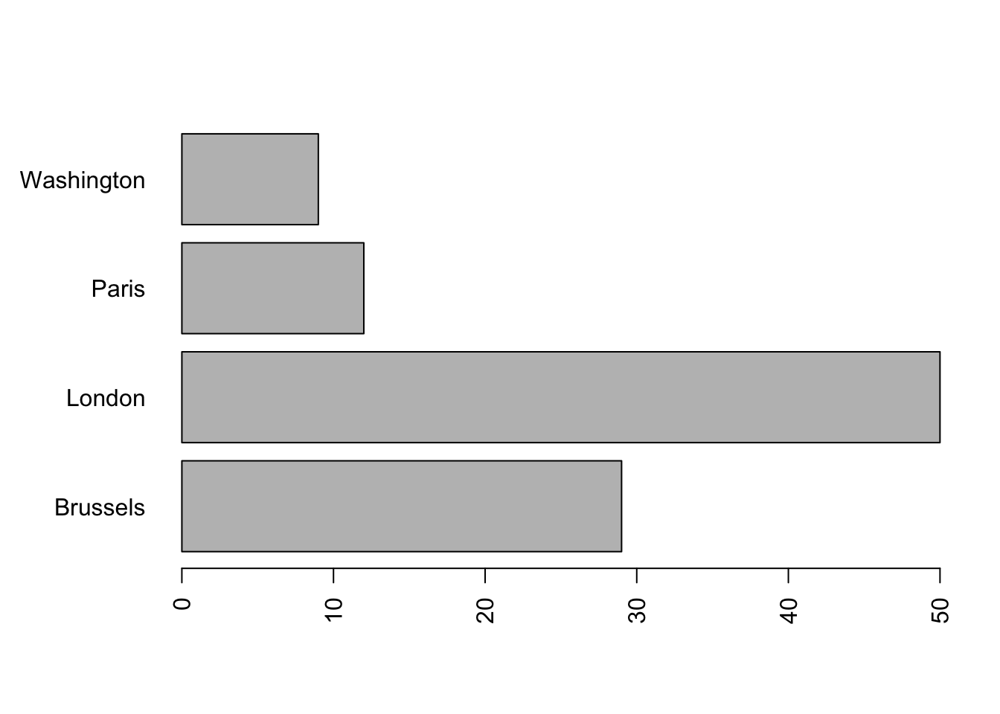
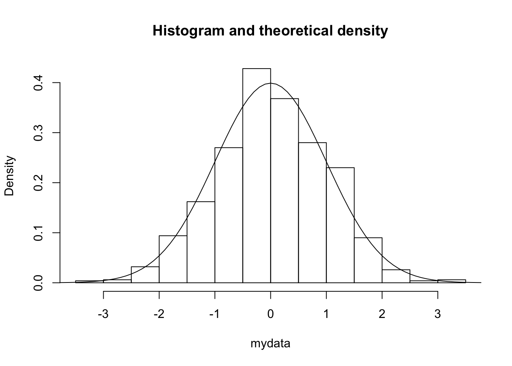
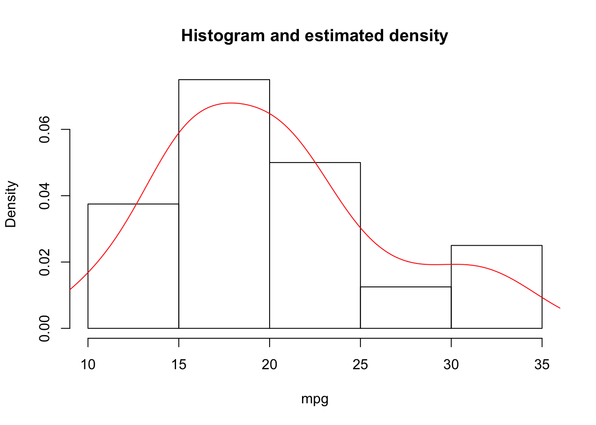

Chapter 7 Base graphics
7.1 Basic constructions and scatter plots
We have already seen how to add a line to a scatter plot, to complete the graph we can specify a title, change the axis labels, and add a legend:
plot(wt, mpg,
main = 'Weight and consumption of cars',
xlab = 'weight', ylab = 'consumption') # xlab = label x axis
abline(h = mean (mpg), col = 2, lty = 2) # h = horizontal line, col = color, lty = line type
legend(x = 'topright', lty = 2, col = 2, legend = 'average consumption')We can also add a third dimension by coloring the points according to a condition:
plot(wt, mpg,
pch = 19, # pch = type of point
col = (mpg >= mean (mpg)) + 1 # 1 = black, 2 = red
)
abline(h = mean(mpg), col = 2, lty = 2) # h = horizontal line, col = color, lty = line type
legend(x = 'topright',
pch = 19,
col = 2: 1,
legend = c ('cons> = average', 'cons <average'), # legend = vector with labels
bty = 'n' # no frame around the legend
)
In general, abline(a, b) allows to add a line with intercept a and slopeb to an existing plot. For example, an alternative way to add the regression line is as follows:
intercept = coef(m)[1]
slope = coef(m)[2]
plot(wt, mpg, main = 'Line of least squares')
abline(a = intercept, b = slope)To add any line (not necessarily a straight line) we use the lines() function. For example, to add the lowess (locally-weighted polynomial regression) smoothing curve:
plot(wt, mpg, main = 'Smoothing curve')
lines(lowess (mpg ~ wt), # lines (): to add a curve
col = 'blue', # same as col = 4
lwd = 2) # lwd = line thickness
We can add new points using points():
plot(wt, mpg, main = 'Smoothing curves')
lines(lowess (mpg ~ wt), col = 'blue', lwd = 2)
outliers = cbind(c(4.5,4.6,5), c(26,26,30))
points(outliers, pch = 2) # pch = 2 for triangles
lines(lowess (c (wt, outliers[, 1]),
c (mpg, outliers[, 2])),
col = 2, lwd = 2)
legend (x = 'bottomleft', col = c (4,2), lwd = 2, legend = c ('without outliers', 'with outliers'), bty = 'n')We can control the range of axes using xlim() and ylim():
7.2 Line graphs
The lines() function adds a line to an existing graph and cannot be used to create a new graph. To draw a line connecting the successive elements of a vector we will rather use plot(x = vector, type = l):
mydata = cos(2 * pi / 12 * (1:36)) + rnorm (36,0, .2) # data simulation
plot(mydata, type = 'l', main = 'type = l')The type parameter allows you to connect (or not) the points in different ways:
par(mfrow = c (2,2)) # explained in the next section
plot(mydata, type = 'p', main = 'type = p') # default
plot(mydata, type = 'o', main = 'type = o')
plot(1: 10, type = 'S', main = 'type = S') # steps 1
plot(1: 10, type = 's', main = 'type = s') # steps 2With plot = 'h' we get a bar plot:
7.3 Graphical parameters
We have already seen that it is possible to control certain graphical elements using parameters:
| Element | Parameter |
|---|---|
| point | pch |
| type of line graph | type |
| color | col |
| line | lty,lwd |
| axis label | xlab,ylab |
| axis dimensions | xlim,ylim |
| label dimensions | cex |
| orientation axes labels | las |
See ?par for a description of the values that these parameters can take.
To impose parameters on all the graphics produced during a session, we will use the par() function. par() is often used to view two or more plots in the same window with the parameter mfrow = c(l, c). In this case the graphs are displayed in a grid with l rows and c columns. Try the following:
# opar = par () # to be able to reset with the initial parameters
par(mfrow = c (1,2))
plot(wt, mpg, main = 'Weight, consumption')
boxplot(hp, main = 'Power')
Changes are implemented until when the session is closed, or the graphics engine is reset by dev.off() or by clicking on the Clear all plots brush in RStudio.
par() is also used to change the size of the margins. This is sometimes useful when the labels on the axes do not fit in the window, as in this example:
mydata = as.factor(sample (x = c ('Paris', 'London', 'Brussels', 'Washington'),
replace = T,
prob = c (.1, .5, .2, .1),
size = 100)) # simulation of a qualitative variable
barplot(summary (mydata),
width = .1,
horiz = T,
las = 2)We modify the parameter which sets the left margin:
par(mar = c(5, 6, 4, 2) + 0.1) # the second component of mar gives the left margin
# Default is c (5, 4, 4, 2) + 0.1
barplot(summary (mydata),
width = .1,
horiz = T,
las = 2)
7.4 Histograms
As we have already noted in the subsection 6.2.1, by default, hist() displays the histogram with the counts. To display the histogram in the density scale we use the option freq = FALSE. In this case, the area of each rectangle will be equal to the proportion of observations in the corresponding class (so that the total area of all the rectangles is one).
To superimpose the curve of a given density:
mydata = rnorm (1000,0,1) # simulation of 1000 observations N (0,1)
hist(mydata, freq = F, main = 'Histogram and theoretical density')
curve(dnorm, # the density function of N (0,1)
from = -5, to = 5, # the range
add = TRUE) # because we want to add the density of N (0,1) to the histogram
Rather than viewing the histogram of the data, we can show the estimated density (using kernel density estimation methods):

7.5 Exercises
- We consider the
midwestdataset from theggplot2package (an advanced graphics package).- Install and charge the package.
- Consult the help for the description of the variables in
midwest. - Reproduce the following graphics using basic functions:
- We consider the
adultdataset available on the site archive.ics.uci.edu/ml/datasets/Adult. The dataset consists of 48,842 rows and 14 columns.- Import the data into
Rfrom the fileadult.data. Look in theadult.namesfile for the names of the variables. - Describe each variable appropriately according to its type.
- Describe the relationship between the variables
ageandclass.
- Import the data into